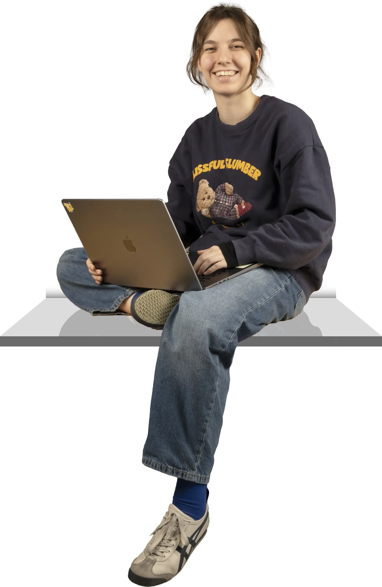

ABOUT ME
Hey, ich bin Luana Rosenberg, 18 Jahre alt und im 5. Semester an der Fachklasse Grafik in Luzern. Ich arbeite gerne im Editorial- und Printbereich, bin aber grundsätzlich offen für alle gestalterischen Richtungen und sammle gern Erfahrungen in weiteren Bereichen. Der Umgang mit neuen Programmen und Tools macht mir Freude. Ich tüftle gerne an Umsetzungsmöglichkeiten, probiere aus und vertiefe mich in neue Arbeitsweisen. Trotz meiner technischen Neugier habe ich eine genauso grosse Leidenschaft für klassische Printmedien und deren Druckverfahren. Bei Projekten schätze ich sowohl den Austausch im Team als auch fokussiertes Arbeiten für mich.
